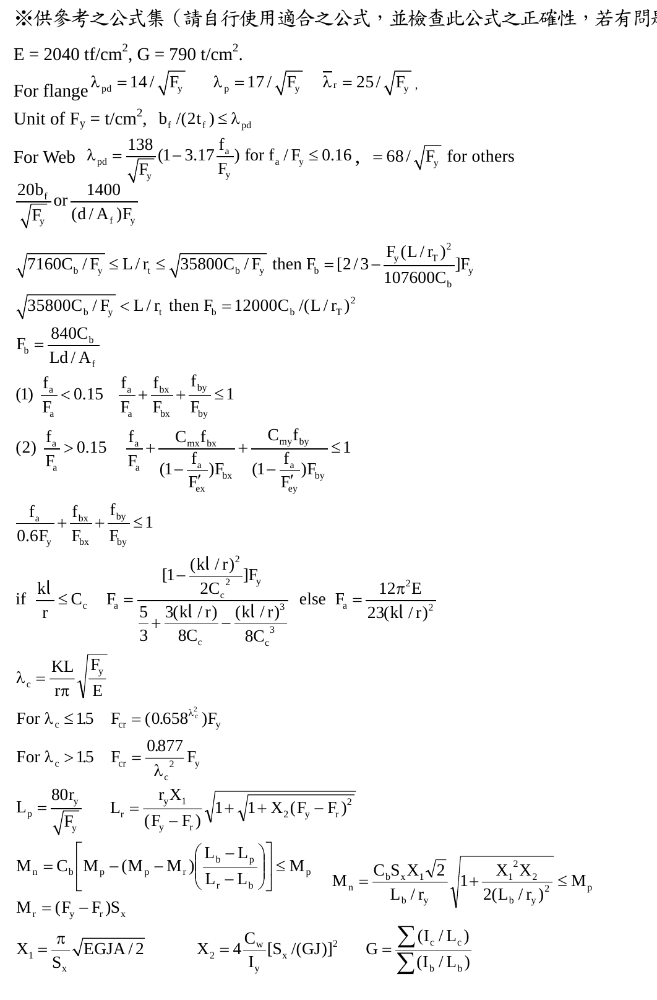
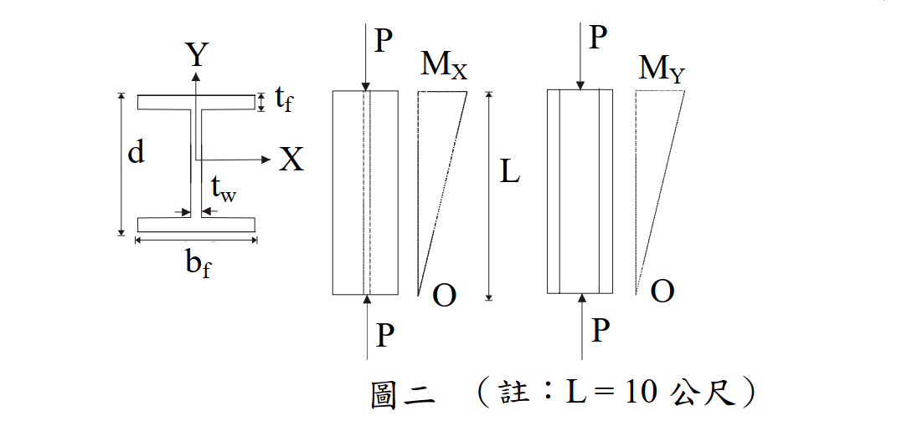
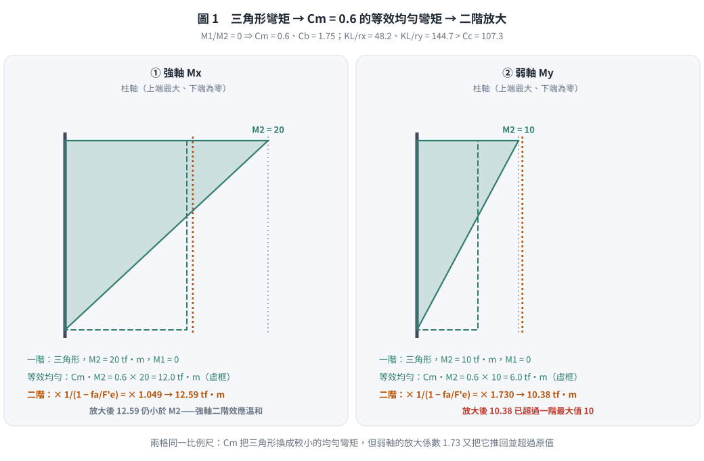
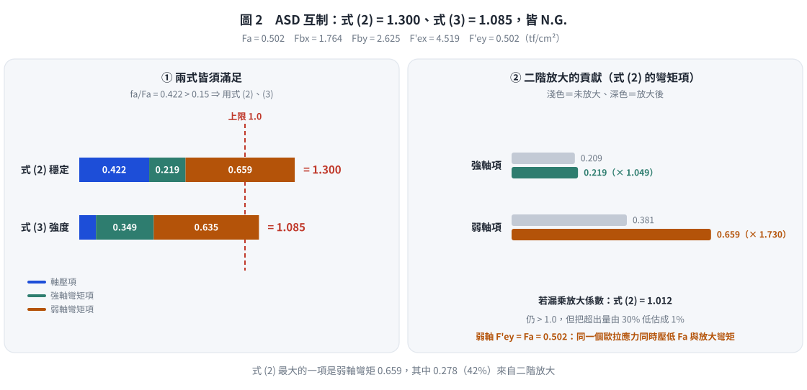

📄 題目正本：考卷原文・附圖・判讀清單（待確認）
SS-2007-2 題目正本
本檔只記錄考卷上寫了什麼、圖上畫了什麼，不含任何解法。解析見同資料夾
SS-2007-2.md。
判讀清單經使用者確認前，狀態為「待確認」；確認後本檔原則上不再修改（改動須回考卷原圖並記 log）。
| 項目 | 內容 |
|---|---|
| 考卷 | raw/exams/SS-2007_鋼結構設計.pdf 第 1 頁（全三頁・第一頁），第二題；公式集在第 3 頁 |
| 考年 | 民國 96 年（2007） |
| 配分 | 25 分 |
| 附圖 | 1 張（圖二：斷面、$M_X$ 與 $M_Y$ 彎矩圖），SS-2007-2-fig-1.png；第 3 頁公式集截圖 SS-2007-2-eqn-1.png |
| 判讀狀態 | 待確認（轉錄 2026-11-02，PyMuPDF 110 dpi 全頁＋附圖 300 dpi 局部目視（向量圖）＋抽出文字核對，盲讀後才比對既有解析） |
1. 考卷原文（逐字）
二、如圖二所示，一 H 500×300×15×20 鋼柱（型鋼所示尺寸 d×bf×tw×tf，單位均為 mm）承受軸壓力（$P$ = 40 tf）及雙軸力矩（$M_x$ = 20 m-tf, $M_Y$ = 10 m-tf），柱長 $L$ = 10 公尺，兩端鉸接，試用 ASD 法檢核此結構是否適當？（25 分）
假設 $C_m = 0.6-0.4(M_1/M_2)$ 及 $C_b = 1.75+1.05(M_1/M_2)+0.3(M_1/M_2)^2 \le 2.3$。所有之鋼板為 $F_y$ = 3.5tf/cm² 及 $F_u$ = 5 tf/cm²。
（H 500×300, $d$ = 50 cm, $t_w$ = 1.5 cm, $b_f$ = 30 cm, $t_f$ = 2 cm, $A$ = 189 cm², $r_x$ = 20.74 cm, $r_Y$ = 6.91 cm, $r_T$ = 7.94 cm, $S_X$ = 3253 cm³, $S_Y$ = 600 cm³, $I_X$ = 81327 cm⁴, $I_Y$ = 9012 cm⁴）
2. 考卷給的公式、附表與參數
- 題文：斷面性質（照錄於 §1）；$P$ = 40 tf；$M_x$ = 20 m-tf、$M_Y$ = 10 m-tf；$L$ = 10 m；$F_y$ = 3.5、$F_u$ = 5 tf/cm²；$C_m$、$C_b$ 公式。
- 第 3 頁「※供參考之公式集（請自行使用適合之公式，並檢查此公式之正確性，若有問題，應自行修正）」與本題相關者照錄：
$$E = 2040\ \text{tf/cm}^2,\quad G = 790\ \text{t/cm}^2$$
$$\text{For flange: } \lambda_{pd} = 14/\sqrt{F_y},\ \lambda_p = 17/\sqrt{F_y},\ \lambda_r = 25/\sqrt{F_y}\ (F_y\ \text{單位 t/cm}^2),\ b_f/(2t_f) \le \lambda_{pd}$$
$$\text{For web: } \lambda_{pd} = \frac{138}{\sqrt{F_y}}\left(1 - 3.17\frac{f_a}{F_y}\right)\ \text{for}\ f_a/F_y \le 0.16,\quad = 68/\sqrt{F_y}\ \text{for others}$$
$$\frac{20b_f}{\sqrt{F_y}}\ \text{or}\ \frac{1400}{(d/A_f)F_y}$$
$$\sqrt{7160C_b/F_y} \le L/r_t \le \sqrt{35800C_b/F_y}\ \text{then}\ F_b = \left[\frac23 - \frac{F_y(L/r_T)^2}{107600C_b}\right]F_y\;;\qquad \sqrt{35800C_b/F_y} < L/r_t\ \text{then}\ F_b = 12000C_b/(L/r_T)^2$$
$$F_b = \frac{840C_b}{Ld/A_f}$$
$$(1)\ \frac{f_a}{F_a} < 0.15:\ \frac{f_a}{F_a} + \frac{f_{bx}}{F_{bx}} + \frac{f_{by}}{F_{by}} \le 1\qquad (2)\ \frac{f_a}{F_a} > 0.15:\ \frac{f_a}{F_a} + \frac{C_{mx}f_{bx}}{\left(1 - \dfrac{f_a}{F'_{ex}}\right)F_{bx}} + \frac{C_{my}f_{by}}{\left(1 - \dfrac{f_a}{F'_{ey}}\right)F_{by}} \le 1$$
$$\frac{f_a}{0.6F_y} + \frac{f_{bx}}{F_{bx}} + \frac{f_{by}}{F_{by}} \le 1$$
$$\text{if } \frac{kl}{r} \le C_c:\ F_a = \frac{\left[1 - \dfrac{(kl/r)^2}{2C_c^2}\right]F_y}{\dfrac53 + \dfrac{3(kl/r)}{8C_c} - \dfrac{(kl/r)^3}{8C_c^3}}\quad \text{else}\ F_a = \frac{12\pi^2E}{23(kl/r)^2}$$

- 公式集沒有給 $F'_e$ 的定義式、沒有給 $C_c$ 式（交互式用到 $F'_{ex}$、$F'_{ey}$）；條件 (1)(2) 寫「< 0.15」「> 0.15」，等號兩邊都沒有。
- 題文沒有給 $K$、側向無支撐長度、$E$（$E$ 只在公式集）；沒有給構架是否可側移。
- 卷首注意事項：㈠可以使用電子計算器；㈡不必抄題。
3. 附圖

圖面文字照錄：Y；tf；d；X；tw；bf；P；MX；L；O；P；P；MY；O；P；圖二（註：L = 10 公尺）。
4. 判讀清單
「把握」標不確定者請優先確認；解讀類項目（題目用字的意思）另標「解讀」。
| # | 項目 | 判讀 | 圖上／題文依據 | 把握 |
|---|---|---|---|---|
| 1 | 彎矩分布 | $M_X$、$M_Y$ 皆為三角形：上端最大（20、10 m-tf）、下端為 0 → $M_1/M_2 = 0$ | 圖二彎矩圖下端標 O（300 dpi 向量圖） | 確定 |
| 2 | 軸向 | X 軸垂直腹板 → $M_x$ 為強軸彎矩、$M_Y$ 為弱軸彎矩 | 斷面圖軸向 | 確定 |
| 3 | 有效長度 | 兩端鉸接 → $K_x = K_y = 1$，$KL$ = 10 m（題未給 $K$） | 題文「兩端鉸接」 | 確定（解讀） |
| 4 | 側向無支撐長度 | 全長 10 m（題未給 $L_b$） | 題文＋圖無中間支撐 | 確定（解讀） |
| 5 | 構架型式 | 題給 $C_m = 0.6-0.4(M_1/M_2)$ → 視為不側移構材 | 題文 | 確定（解讀） |
| 6 | $E$ | 題文未給，公式集 $E$ = 2040 tf/cm² | 第 3 頁 | 確定 |
| 7 | $F'_e$ | 公式集未給定義式，考生須自備 | 第 3 頁 | 確定 |
| 8 | $F_u$ | 題給 5 tf/cm²，本題檢核用不到 | 題文 | 確定（解讀） |
轉錄：2026-11-02（SS-U1-3 題目正本推廣・批 1）
考題編號：SS-2007-2
主分類： SS-U1-3 梁柱桿件
副分類： 無
設計法： ASD
標籤： 梁柱桿件 ASD 雙軸彎矩 LTB側扭挫屈 Cm放大係數 F'e歐拉應力 彈性挫屈 互制方程式
1. 原始題目重述
H 500×300×15×20（$d \times b_f \times t_w \times t_f$，單位 mm）鋼柱，兩端鉸接（K=1），承受下列組合載重，以 ASD 驗算是否滿足規範要求：
設計載重：
- 軸壓力：$P = 40$ tf
- 強軸彎矩：$M_x = 20$ m-tf（= 2000 tf·cm）
- 弱軸彎矩：$M_y = 10$ m-tf（= 1000 tf·cm）
- 柱長：$L = 10$ m = 1000 cm
材料： $F_y = 3.5 \text{ tf/cm}^2$，$F_u = 5 \text{ tf/cm}^2$，$E = 2040 \text{ tf/cm}^2$
斷面性質（題目提供）：
| 性質 | 數值 |
|---|---|
| $A$ | 189 cm² |
| $r_x$ | 20.74 cm |
| $r_y$ | 6.91 cm |
| $r_T$ | 7.94 cm |
| $S_x$ | 3253 cm³ |
| $S_y$ | 600 cm³ |
| $I_x$ | 81327 cm⁴ |
| $I_y$ | 9012 cm⁴ |
附圖：
圖說：梁柱兩端受軸壓力 P = 40 tf；彎矩 Mx 與 My 均為線性分布，一端為最大值，另一端為零（M1 = 0，M2 = Mx 或 My）。L = 10 m（公尺）。
設計參數：
$$C_m = 0.6 - 0.4(M_1/M_2) \quad;\quad C_b = 1.75 + 1.05(M_1/M_2) + 0.3(M_1/M_2)^2 \leq 2.3$$
2. 考題核心精神與出題者意圖
本題核心：ASD 雙軸彎矩梁柱桿件完整驗算流程。
關鍵難點：
1. 弱軸細長比 $KL/r_y = 144.7 > C_c = 107.3$，進入彈性挫屈區段 → $F_a$ 很小，且 $F'_{ey} = F_a$，使放大係數 $1/(1-f_a/F'_{ey})$ 顯著放大弱軸彎矩效應
2. 強軸 LTB（L/rT 落在非彈性 LTB 範圍）→ Fbx 需以公式計算，不能直接用 0.66Fy
3. 判斷 fa/Fa ≥ 0.15 → 必須用 Equation (2) 含放大係數
3. 解題戰略地圖與陷阱分析
解題步驟：
1. 計算實際應力 fa、fbx、fby
2. 計算 Cc 並比對 KL/r，確認 Fa（弱軸彈性挫屈控制）
3. 計算 Fbx（需考慮 LTB，兩公式取大）
4. 確認 Fby（弱軸彎曲，結實斷面 = 0.75Fy）
5. 判斷 fa/Fa 是否 ≥ 0.15，選用 Equation (2)
6. 代入兩個互制方程式驗算
關鍵陷阱：
1. F'ey ≠ Euler 公式：當弱軸為彈性挫屈時，$F'_{ey} = F_a$（與 Fa 計算式相同），而非另外算一個 Euler 值
2. 兩個互制方程式都要查：Equation (2) 和 Equation (3) 均不得超過 1.0
3. M1/M2 = 0 的影響：矩一端為零 → Cm = 0.6，Cb = 1.75（不是 1.0）
3.5 變數層次分析（Variable Hierarchy Analysis）
複習提示：解題後，在每個卡住的知識點「卡關?」欄標記
⚠；第二次複習時只看有⚠的項目。
最終目標： 以 ASD 雙軸互制方程式驗算 H500×300×15×20 梁柱（P+Mx+My），判斷是否符合規範
主要公式（$\boxed{\phantom{x}}$ = 未知，待推導）
$$\frac{f_a}{\boxed{F_a}} + \frac{C_{mx}f_{bx}}{\left(1-f_a/\boxed{F'_{ex}}\right)\boxed{F_{bx}}} + \frac{C_{my}f_{by}}{\left(1-f_a/\boxed{F'_{ey}}\right)\boxed{F_{by}}} \leq 1.0 \quad \text{（Eq.2，穩定性）}$$
$$\frac{f_a}{0.6F_y} + \frac{f_{bx}}{\boxed{F_{bx}}} + \frac{f_{by}}{\boxed{F_{by}}} \leq 1.0 \quad \text{（Eq.3，斷面強度）}$$
L1：題目直接給定
| 符號 | 數值 | 說明 |
|---|---|---|
| 斷面 | H 500×300×15×20 mm | $d \times b_f \times t_w \times t_f$ |
| $P$ | 40 tf | 軸壓力 |
| $M_x$ | 2000 tf·cm | 強軸彎矩（一端最大，另端為零） |
| $M_y$ | 1000 tf·cm | 弱軸彎矩（一端最大，另端為零） |
| $L$ | 1000 cm | 柱長（兩端鉸接 $K=1$） |
| $F_y$ | 3.5 tf/cm² | 降伏應力 |
| $E$ | 2040 tf/cm² | 彈性模數 |
| $A$ | 189 cm² | 斷面積 |
| $r_x$ | 20.74 cm | 強軸迴轉半徑 |
| $r_y$ | 6.91 cm | 弱軸迴轉半徑 |
| $r_T$ | 7.94 cm | 扭轉對應迴轉半徑 |
| $S_x$ | 3253 cm³ | 強軸彈性模數 |
| $S_y$ | 600 cm³ | 弱軸彈性模數 |
L2：需知識點推導
Step 1：力矩分布與 Cm、Cb
| 符號 | 公式 / 來源 | 卡關? |
|---|---|---|
| $M_1/M_2$ | $= 0$（一端最大，另端為零） | |
| $C_m$ | $0.6 - 0.4(M_1/M_2) = 0.6$ | |
| $C_b$ | $1.75 + 1.05 \times 0 + 0.3 \times 0 = 1.75$ |
Step 2：實際應力
| 符號 | 公式 / 來源 | 卡關? |
|---|---|---|
| $f_a$ | $P/A = 40/189 = 0.2116$ tf/cm² | |
| $f_{bx}$ | $M_x/S_x = 2000/3253 = 0.615$ tf/cm² | |
| $f_{by}$ | $M_y/S_y = 1000/600 = 1.667$ tf/cm² |
Step 3：容許軸壓應力 Fa（弱軸彈性挫屈控制）
| 符號 | 公式 / 來源 | 卡關? |
|---|---|---|
| $C_c$ | $\sqrt{2\pi^2 E/F_y} = 107.3$ | |
| $KL/r_y$ | $1000/6.91 = 144.7 > C_c$ → 彈性挫屈 | |
| $F_a$ | $\frac{12\pi^2 E}{23(KL/r_y)^2} = 0.502$ tf/cm² | |
| $f_a/F_a$ | $0.2116/0.502 = 0.422 > 0.15$ → 用 Eq.(2) |
Step 4：容許強軸彎矩應力 Fbx（LTB 判斷）
| 符號 | 公式 / 來源 | 卡關? |
|---|---|---|
| $L/r_T$ | $1000/7.94 = 125.9$ | |
| LTB 區段 | $\sqrt{7160C_b/F_y} = 59.8 < 125.9 < \sqrt{35800C_b/F_y} = 133.8$ → 非彈性 | |
| $F_{b1}$（LTB公式一） | $[2/3 - F_y(L/r_T)^2/(107600C_b)]F_y = 1.302$ tf/cm² | |
| $F_{b2}$（Ld/Af公式） | $840C_b/(Ld/A_f) = 1.764$ tf/cm² | |
| $F_{bx}$ | $\max(1.302, 1.764) = 1.764$ tf/cm² |
Step 5：容許弱軸彎矩應力 Fby
| 符號 | 公式 / 來源 | 卡關? |
|---|---|---|
| 翼板結實判斷 | $b_f/(2t_f) = 7.5 \leq 65/\sqrt{F_y(\text{ksi})}$ ✓ | |
| $F_{by}$ | $0.75 F_y = 2.625$ tf/cm²（結實斷面） |
Step 6：歐拉應力 F'e 與互制方程式
| 符號 | 公式 / 來源 | 卡關? |
|---|---|---|
| $F'_{ex}$ | $12\pi^2E / [23(KL/r_x)^2] = 4.522$ tf/cm² | |
| $F'_{ey}$ | $= F_a = 0.502$ tf/cm²（弱軸彈性挫屈，公式相同） | |
| Eq.(2) 合計 | $0.422 + 0.220 + 0.658 = 1.300 > 1.0$ ❌ | |
| Eq.(3) 合計 | $0.101 + 0.349 + 0.635 = 1.085 > 1.0$ ❌ |
L3：深層知識（不懂就卡住）
| 知識點 | 說明 | 卡關? |
|---|---|---|
| ASD 互制方程式兩式都要驗 | Eq.(2) 穩定性 + Eq.(3) 斷面強度，兩者均不得超過 1.0 | |
| $F'_{ey} = F_a$（彈性挫屈時） | 弱軸彈性挫屈時，$F'_{ey}$ 與 $F_a$ 使用完全相同公式，兩者數值相等 | |
| 弱軸細長比大的放大效應 | $KL/r_y = 144.7 > C_c$，$F'_{ey}$ 極小，放大係數 $1/(1-f_a/F'_{ey}) = 1.73$，弱軸項被大幅放大 | |
| $C_b$ 與 $C_m$ 的差異 | $C_b$ 用於 LTB 強度（梁彎矩梯度）；$C_m$ 用於二階放大係數（梁柱撓曲形狀） | |
| ASD LTB 兩公式取較大值 | $F_{b1}$（L/rT 公式）與 $F_{b2}$（Ld/Af 公式）各自適用不同 LTB 範圍，取較大值 |
4. 步驟化詳細計算過程
Step 1：力矩分布參數
由圖二，彎矩一端為最大值，另一端為零：
$$M_1/M_2 = 0$$
$$C_m = 0.6 - 0.4 \times 0 = \mathbf{0.6}$$
$$C_b = 1.75 + 1.05 \times 0 + 0.3 \times 0^2 = \mathbf{1.75}$$

圖 1 三角形彎矩以 $C_m = 0.6$ 換成等效均勻彎矩，再乘二階放大。強軸放大後仍小於 $M_2$；弱軸放大 1.73 倍後已超過一階最大值。這張圖攔的是把三角形彎矩取 $C_m = 1.0$，以及以為 $C_m$ 折減後弱軸彎矩一定變小。
Step 2：實際應力
$$f_a = \frac{P}{A} = \frac{40}{189} = 0.2116 \text{ tf/cm}^2$$
$$f_{bx} = \frac{M_x}{S_x} = \frac{2000}{3253} = 0.6148 \text{ tf/cm}^2$$
$$f_{by} = \frac{M_y}{S_y} = \frac{1000}{600} = 1.667 \text{ tf/cm}^2$$
Step 3：容許軸壓應力 Fa（ASD）
計算 Cc：
$$C_c = \sqrt{\frac{2\pi^2 E}{F_y}} = \sqrt{\frac{2\pi^2 \times 2040}{3.5}} = \sqrt{11{,}505} = 107.3$$
計算兩軸細長比：
$$\frac{KL}{r_x} = \frac{1 \times 1000}{20.74} = 48.2$$
$$\frac{KL}{r_y} = \frac{1 \times 1000}{6.91} = 144.7 \quad \leftarrow \text{ 控制}$$
由於 $KL/r_y = 144.7 > C_c = 107.3$ → 彈性挫屈：
$$F_a = \frac{12\pi^2 E}{23(KL/r)^2} = \frac{12\pi^2 \times 2040}{23 \times (144.7)^2} = \frac{241{,}607}{481{,}574} = \boxed{0.502 \text{ tf/cm}^2}$$
判斷互制方程式類型：
$$\frac{f_a}{F_a} = \frac{0.2116}{0.502} = 0.422 > 0.15 \implies \text{使用 Equation (2)}$$
Step 4：容許強軸彎矩應力 Fbx（含 LTB）
$$\frac{L}{r_T} = \frac{1000}{7.94} = 125.9$$
$$\sqrt{\frac{7160 C_b}{F_y}} = \sqrt{\frac{7160 \times 1.75}{3.5}} = 59.8 \quad ; \quad \sqrt{\frac{35800 C_b}{F_y}} = 133.8$$
$\because 59.8 < 125.9 < 133.8$ → 非彈性 LTB：
$$F_{b1} = \left[\frac{2}{3} - \frac{F_y(L/r_T)^2}{107600 C_b}\right]F_y = \left[0.6667 - 0.2947\right] \times 3.5 = 1.302 \text{ tf/cm}^2$$
$$A_f = b_f \times t_f = 30 \times 2.0 = 60 \text{ cm}^2 \quad ; \quad \frac{Ld}{A_f} = \frac{1000 \times 50}{60} = 833.3$$
$$F_{b2} = \frac{840 C_b}{Ld/A_f} = \frac{840 \times 1.75}{833.3} = 1.764 \text{ tf/cm}^2$$
$$F_{bx} = \max(1.302,\ 1.764) = \boxed{1.764 \text{ tf/cm}^2}$$
Step 5：容許弱軸彎矩應力 Fby
$$F_{by} = 0.75 F_y = 0.75 \times 3.5 = \boxed{2.625 \text{ tf/cm}^2}$$
Step 6：歐拉應力 F'e
$$F'_{ex} = \frac{12\pi^2 E}{23(KL/r_x)^2} = 4.522 \text{ tf/cm}^2$$
$$F'_{ey} = \frac{12\pi^2 E}{23(KL/r_y)^2} = 0.502 \text{ tf/cm}^2 = F_a$$
Step 7：ASD 互制方程式驗算
Equation (2)：
$$\frac{f_a}{F_a} + \frac{C_{mx} f_{bx}}{\left(1-\dfrac{f_a}{F'_{ex}}\right)F_{bx}} + \frac{C_{my} f_{by}}{\left(1-\dfrac{f_a}{F'_{ey}}\right)F_{by}} = 0.422 + 0.220 + 0.658 = \mathbf{1.300 > 1.0\ ❌}$$
Equation (3)：
$$\frac{f_a}{0.6 F_y} + \frac{f_{bx}}{F_{bx}} + \frac{f_{by}}{F_{by}} = 0.101 + 0.349 + 0.635 = \mathbf{1.085 > 1.0\ ❌}$$
$$\boxed{\text{H500×300×15×20 不滿足 ASD 雙軸梁柱互制方程式}}$$

圖 2 兩式的三項組成與二階放大的貢獻。弱軸項約四成來自 $1/(1-f_a/F'_{ey})$；這張圖攔的是漏乘放大係數——式 (2) 會由 1.300 掉到 1.012，超出量被低估成 1%。
5. 關鍵爭議點與進階探討
關鍵觀察：弱軸彈性挫屈的特殊性
當 $KL/r_y > C_c$ 時，$F'_{ey} = F_a$，導致放大係數 $1/(1-f_a/F'_{ey})$ 的分母極小（= 0.578），使弱軸彎矩項被放大 1.73 倍。這是本題超過限制的主要原因，提示考試重點：細長柱的 Fa 很小時，弱軸彎矩的二階放大效應會非常顯著。
改善方向（實務）：
- 縮短柱長（加設中間側向支撐點 → 降低 $KL/r_y$）
- 改用更大的 H 型或箱型斷面（提高 $r_y$ 和 $S_y$）
- 採用鋼管或箱型柱（兩軸 $r$ 接近，避免弱軸主導）
與 LRFD 的比較：
ASD 在此情境的放大係數 $C_m/(1-f_a/F'_e)$ 對應 LRFD 的 $B_1$ 放大係數，兩者物理意義相同（P-δ 效應）。
圖解補繪：2026-11-03（向量圖 2 張，腳本 gen_SS-2007-2.py，改輸入可原地重跑；SVG 供 wiki／PDF，2× PNG 供 pptx／影片）